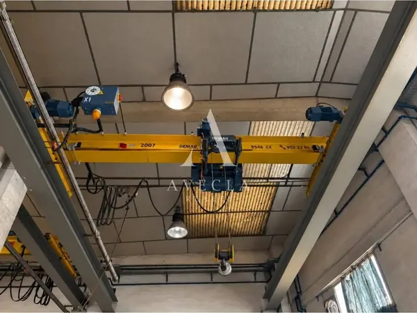
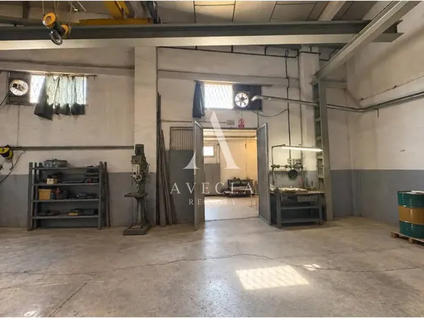
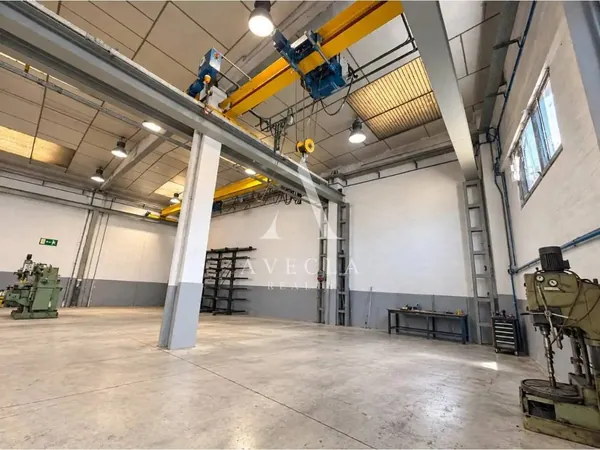

Plano · tocar un número de la lista lo marca acá
Letras: condiciones go/no-go · o: obra necesaria · números: lo que hay que medir o confirmar · c: lo que el chequeo de circulación marca hoy · trazos: el área o la franja de la cota · la línea azul: el largo libre a lo largo de la pista · ejes x/z: el origen de las cotas.
Condiciones go/no-go · si alguna sale mal, la nave se cae o hay que rehacer el layout
- Se decide en la visitaDecide: ≥ 5,6 m libres bajo jácenas, cerchas, luminarias e instalaciones en la vertical de la plataforma: plataforma a 2,8 m + 2,4 m del rider + 0,4 m de instalaciones (PROGRAMA §1). Si da menos, se baja la plataforma (a lo medido − 2,8 m), nunca el run-out.Altura libre medida con láser sobre la plataforma (m):
14 notas del layout
fuente de la cota: estimada · anuncio: 6,50 m «hasta jácena», leído como libre bajo cumbrera (lectura conservadora). En las fotos 3 y 9, con el testero oeste de frente, la jácena en apoyos queda a 0,86-0,89 de esa cota, así que en apoyos hay 5,6 m. Medida con la escala del plano, la foto 3 da ≈5,4 m en apoyos y ≈6,3 m bajo cumbrera. Los carriles de grúa están a ≈4,7-5,0 m
riesgo: Altura sin medir. Si los 6,50 m son en apoyos, la plataforma puede subir a 3,3-3,5 m. Si en apoyos hay ≈5,4 m (foto 3 leída con la escala conservadora), sobre la plataforma siguen quedando ≥5,8 m bajo cumbrera, pero en los bordes de la crujía no se cumpliría la regla. Hay que medir la jácena en apoyos y en cumbrera, los carriles y los puentes grúa.
riesgo: Trampolines fuera. Las 2 camas (5,2 × 3,05 m en fila, más colchonetas: ≈11,7 × 4 m) solo caben en la crujía lateral este, que ocupan el pad, más prioritario, y el lounge, que es obligatorio. Además, la altura (≈5,6-6,5 m) no alcanza para camas elásticas de entrenamiento, que piden ≥7 m.
riesgo: Escala sin cotas, con un margen de ±10 %. Si los 756,59 m² fueran solo la nave, como suponía el boceto viejo, todo crecería un 12 % (34,9 × 23,6 m), cabría más pista y la foto 3 daría ≈6,2 m en apoyos. La cuadrícula de 0,60 m del falso techo de las oficinas (fotos 18, 19, 21 y 22) puede servir de regla in situ.
riesgo: Carril de la grúa del muro norte: corre a ≈4,7-5,0 m sobre las pilastras, y el borde norte de la plataforma (cota 2,8, z 1,15) queda a ≈0,3 m de sus pilares de celosía: la cabeza del rider, a ≈4,6 m, a menos de 1 m del carril. Hay que forrarlo o desmontarlo. El rellano de la escalera (z 7,85-9,75) queda a ≥ 1 m del carril de la fila interior.
riesgo: Visor: la cubierta a dos aguas sale centrada en todo el contorno, con la cumbrera sobre la fila de pilares; en la realidad la crujía principal tiene su propia cumbrera en el centro (z ≈5,6). Las jácenas van de muro a muro sobre las pilastras del muro norte: la crujía lateral no tiene las suyas, que en la realidad apoyan en las pilastras del muro sur.
riesgo: Escalera de la plataforma: va en dos tramos de 8 peldaños con descanso, porque 2,8 m de subida superan los 2,25 m que puede salvar un solo tramo de uso público (CTE DB-SUA 1). El rellano de llegada (1,2 m) abre la barandilla sur de la plataforma en x 29,13-30,33. En obra hay que unirlo a la plataforma sin la junta de 0,1 m del dibujo, y llevar la red lateral por fuera de la escalera: en el visor, un poste queda en el borde del último tramo. El descanso y el último tramo quedan por debajo de la superficie de la rampa, a 0,1 m de su faldón: hace falta un peto entre la escalera y la rampa para que nadie pase de una a otra. Entre la escalera y los pilares de celosía de la fila interior quedan 0,95 m (1,37 hasta los pilares de hormigón): es el paso a la BIE y al extintor del testero este.
riesgo: transitable (24/11, walk: de los 3 errores de antes del replanteo, ninguno; los 3 de hoy son la puerta del rellano y lo de abajo de dos escaleras, sin cerrar: docs/TRANSITABILIDAD.md): la pista sube 1,3 m hacia el muro norte (z 2,45 → 1,15) y el retorno y la escalera de la plataforma pasan al lado sur. (1) El retorno contra el muro norte dejaba 0,95 m libres entre los pilares de celosía de la grúa (z 0,875) y la franja de la pista; ahora va en z 8,0-9,9 (1,90 m dibujados, 1,85 libres). (2) Desde la plataforma había 42,6 m hasta un punto con dos recorridos alternativos (DB-SI 3 tabla 3.1: 25), porque la escalera bajaba al retorno del norte, que solo lleva al oeste; ahora baja al lado sur, desde donde se va al oeste o a la puerta doble del muro sur: 15,1 m (19,3 con lo que mide walk desde checker-2), y 29,8 m sin contar esa puerta, que da al anexo y no está comprobado que sea salida (risks 4): un error, el replanteo depende de ella. Los extintores 2 y 3 pasan a los pilares de celosía de la fila interior y la BIE 1 al rincón noroeste: en el muro norte quedaban detrás de la pista. Queda, a medir en la visita, el acceso al gym de la 1ª. (a) La puerta del rellano de llegada de la escalera existente (altillo existing:2, estimado: `add_door` la deja en 0,80 por el lado de 1,1 m, y con la hoja abierta deja 0,73 libres, contra 0,80). (b) La escalera existente misma: el plano la dibuja en U, de forma esquemática (x 8,7-10,1, z 17,8-19,6), y los datos la llevan recta con medidas estimadas (3,2 m de subida en 2,6 m); de ahí salen las huellas de 0,137 m y el tramo de 3,2 m sin descanso que avisa walk. Tal como está dibujado, el recorrido del público al gym no cumple hoy: la escalera, CTE DB-SUA 1 §4.2 (huella ≥ 0,28 m, ≤ 2,25 m por tramo), y la puerta, DB-SI 3 tabla 4.1. Si la visita confirma lo dibujado, obra necesaria (ensanchar la puerta a 0,90 y rehacer la escalera) o la 1ª queda para el personal y el gym sale del programa, que en planta baja no cabe (risks 1 y 3): es una decisión de negocio.
supuesto: Contorno simplificado a 4 vértices; el muro este se toma recto (el plano lo abre 0,17 m en su tramo sur). El anexo sur (≈115 m², techo de ≈3-4 m) y el K.T. (≈24 m²) quedan fuera porque no tienen la altura de la nave; se proponen como almacén de módulos y taller grande.
supuesto: Pista: 2 líneas de 3,3 m en la crujía principal, contra el muro norte (z 1,15-7,75: la franja de 0,2 m del murete y la red queda delante de los pilares de celosía del puente grúa, que llegan a z 0,875), y al sur el retorno y la escalera de la plataforma, en la franja de 2,7 m que queda hasta los pilares de celosía de la fila interior (z 10,7), que es también el paso público. Tres líneas no caben: 3 × 3,0 + 1,8 = 10,8 m, y entre pilastras y pilares hay 10,67 m libres.
supuesto: Cubierta en el visor: tipo «gable» con la cumbrera a lo largo de x. El visor centra la cumbrera en el contorno entero (z ≈10,5), no en la crujía principal (z ≈5,6 en la realidad), y pone la segunda fila de lucernarios en la crujía lateral.
supuesto: match (23/11): sin cota catastral utilizable (la parcela de Schumann 10 es un edificio de 50 × 25 m que no casa con el plano), el contorno sigue escalado por superficie (±10 %). Las alturas (5,6 m en apoyos) quedan confirmadas solo en proporción al portón supuesto de 4,0 × 4,0 m: si el portón midiera 4,5 m de alto, todo subiría un 12 % (≈6,3 m en apoyos, coherente con los 6,5 m «hasta jácena» del anuncio leídos en apoyos).
supuesto: match (23/11): en la foto 14 hay un elemento vertical al este de la ventana con cortina (u ≈215-230, x ≈27,6-27,9) que podría ser otra pilastra del muro sur (P1 y la de esquina están a ≈4 m); no se confirma en otra foto y no se dibuja. El pilar de celosía de la grúa delante de la pilastra de esquina (foto 7) deja el paso a la puerta doble en ≈0,85 m si no se desmonta la grúa; el visor no dibuja los pilares de celosía.
supuesto: medir en la visita: alto del portón (se supone 4,0 m y de él cuelgan todas las alturas), jácena en apoyos y en cumbrera de la crujía principal, carriles de grúa, forjado y falso techo de las oficinas (se suponen 3,2 y 2,6 m) y antepecho y dintel de sus ventanas (en proporción a esos 2,6 m: ≈0,65 y ≈1,8 m en la de las fotos 21-22, ≈0,9 y ≈1,75 m en la de la 18).
- Con margenDecide: ≥ 26,63 m en línea recta a lo largo de la pista (plataforma 2 m, rampa, llano y el final más largo, run-out ≥ 8 m), del muro detrás de la plataforma al muro después del final. Si da menos, se acorta la rampa o el llano y se baja la plataforma, nunca el run-out.Distancia del muro al muro, a lo largo de la pista (m):
- Se decide en la visitaDecide: Dos salidas o más a la calle o a un espacio exterior seguro, con recorridos de evacuación ≤ 50 m (CTE DB-SI 3 §3, tabla 3.1), y sus puertas con ≥ 0,80 m de paso y 2,10 m bajo el dintel. Cada salida nueva solo vale si el muro da a la calle o a un patio con salida y la propiedad deja abrirla (las obras, en «Obra necesaria»).
- acceso acristalado de 1,2 m en la arista 3 (hueco 0, x 0 · z 10,4): nueva (hay que abrirla) · obra o1
- puerta peatonal de 1 m en la arista 3 (hueco 2, x 0 · z 8,8)
- salida de emergencia de 0,9 m en la arista 3 (hueco 3, x 0 · z 19,3)
- puerta peatonal de 1,3 m en la arista 2 (hueco 7, x 22,55 · z 17,5)
Salidas confirmadas (cuáles, a dónde dan, ancho de paso):3 notas del layout
riesgo: Evacuación: todas las salidas de la nave dan al patio oeste salvo la puerta doble del muro sur, al anexo. walk cuenta las cuatro: 26,5 m como mucho, y desde todo punto ≤ 19,3 m hasta uno con dos recorridos alternativos (desde el pie de la escalera de la plataforma salen el paso hacia el oeste y el de la puerta doble). Esa puerta (hueco 7, en (22,55; 17,5)) solo es salida si la puerta del fondo del anexo (foto 6) da a la calle, y eso no está comprobado: hay que confirmarlo en la visita. Sin ella (`exit: false` en el hueco 7), con las tres del patio oeste, walk da 37,9 m como mucho (DB-SI 3 tabla 3.1: 50) y 29,8 m hasta dos recorridos desde la plataforma de la pista (25): un error, así que el replanteo depende de la puerta doble. Si la visita dice que no es salida, hay que re-planear la escalera de la plataforma (que su pie vuelva a tener dos recorridos sin ella) o abrir una salida de emergencia, una decisión del usuario (docs/TRANSITABILIDAD.md, «Propuestas de obra»). Los 17,5 m sin ella que decía esta nota eran de rp-e, de antes de checker-2 (que mide todas las parejas de salidas). Los ≈42 m hasta dos recorridos eran del trazado de antes del replanteo (la escalera de la plataforma bajaba al retorno del norte, que solo lleva al oeste) y no cambiaban con la puerta doble o sin ella.
riesgo: transitable (24/11, walk: de los 3 errores de antes del replanteo, ninguno; los 3 de hoy son la puerta del rellano y lo de abajo de dos escaleras, sin cerrar: docs/TRANSITABILIDAD.md): la pista sube 1,3 m hacia el muro norte (z 2,45 → 1,15) y el retorno y la escalera de la plataforma pasan al lado sur. (1) El retorno contra el muro norte dejaba 0,95 m libres entre los pilares de celosía de la grúa (z 0,875) y la franja de la pista; ahora va en z 8,0-9,9 (1,90 m dibujados, 1,85 libres). (2) Desde la plataforma había 42,6 m hasta un punto con dos recorridos alternativos (DB-SI 3 tabla 3.1: 25), porque la escalera bajaba al retorno del norte, que solo lleva al oeste; ahora baja al lado sur, desde donde se va al oeste o a la puerta doble del muro sur: 15,1 m (19,3 con lo que mide walk desde checker-2), y 29,8 m sin contar esa puerta, que da al anexo y no está comprobado que sea salida (risks 4): un error, el replanteo depende de ella. Los extintores 2 y 3 pasan a los pilares de celosía de la fila interior y la BIE 1 al rincón noroeste: en el muro norte quedaban detrás de la pista. Queda, a medir en la visita, el acceso al gym de la 1ª. (a) La puerta del rellano de llegada de la escalera existente (altillo existing:2, estimado: `add_door` la deja en 0,80 por el lado de 1,1 m, y con la hoja abierta deja 0,73 libres, contra 0,80). (b) La escalera existente misma: el plano la dibuja en U, de forma esquemática (x 8,7-10,1, z 17,8-19,6), y los datos la llevan recta con medidas estimadas (3,2 m de subida en 2,6 m); de ahí salen las huellas de 0,137 m y el tramo de 3,2 m sin descanso que avisa walk. Tal como está dibujado, el recorrido del público al gym no cumple hoy: la escalera, CTE DB-SUA 1 §4.2 (huella ≥ 0,28 m, ≤ 2,25 m por tramo), y la puerta, DB-SI 3 tabla 4.1. Si la visita confirma lo dibujado, obra necesaria (ensanchar la puerta a 0,90 y rehacer la escalera) o la 1ª queda para el personal y el gym sale del programa, que en planta baja no cabe (risks 1 y 3): es una decisión de negocio.
supuesto: Entrada de público nueva, acristalada y de 1,2 m, en el muro oeste entre la puerta gris y la fila de pilares (z 9,8-11,0). La recepción queda a la izquierda al entrar, con su puerta de servicio detrás, y el paso público sigue en línea. La puerta del vestíbulo queda para el personal y como salida de emergencia.
- Se decide en la visitaDecide: Huella ≥ 0,28 m, contrahuella de 0,13 a 0,185 m y 0,54 ≤ 2C + H ≤ 0,70 (CTE DB-SUA 1 §4.2.1); ancho ≥ 1,20 m (PROGRAMA; el CTE pide 1,00-1,10); tramos de ≤ 2,25 m sin descanso. Una escalera existente que no cumple no sirve para el público (gym o altillo): hay que rehacerla o poner otra.
- de la plataforma (escalera): huella 0,3 m, contrahuella 0,17 m, ancho 1,76 m, tramo de 1,4 m sin descanso, sube 2,8 m
- existente (escalera-existente): huella 0,14 m, contrahuella 0,17 m, ancho 1,12 m, tramo de 3,2 m sin descanso, sube 3,2 m
Huella × contrahuella × ancho de la escalera existente (m):9 notas del layout
riesgo: El gym no está en planta baja: va a la 1ª planta, fuera del recorrido accesible y sin ascensor, por una escalera y una puerta existentes que, tal como están dibujadas (medidas estimadas), no cumplen para el público: a medir en la visita (risks 14). Hay que comprobar que el forjado de oficinas aguanta la sobrecarga del rack y los discos, y poner suelo de caucho.
riesgo: Evacuación: todas las salidas de la nave dan al patio oeste salvo la puerta doble del muro sur, al anexo. walk cuenta las cuatro: 26,5 m como mucho, y desde todo punto ≤ 19,3 m hasta uno con dos recorridos alternativos (desde el pie de la escalera de la plataforma salen el paso hacia el oeste y el de la puerta doble). Esa puerta (hueco 7, en (22,55; 17,5)) solo es salida si la puerta del fondo del anexo (foto 6) da a la calle, y eso no está comprobado: hay que confirmarlo en la visita. Sin ella (`exit: false` en el hueco 7), con las tres del patio oeste, walk da 37,9 m como mucho (DB-SI 3 tabla 3.1: 50) y 29,8 m hasta dos recorridos desde la plataforma de la pista (25): un error, así que el replanteo depende de la puerta doble. Si la visita dice que no es salida, hay que re-planear la escalera de la plataforma (que su pie vuelva a tener dos recorridos sin ella) o abrir una salida de emergencia, una decisión del usuario (docs/TRANSITABILIDAD.md, «Propuestas de obra»). Los 17,5 m sin ella que decía esta nota eran de rp-e, de antes de checker-2 (que mide todas las parejas de salidas). Los ≈42 m hasta dos recorridos eran del trazado de antes del replanteo (la escalera de la plataforma bajaba al retorno del norte, que solo lleva al oeste) y no cambiaban con la puerta doble o sin ella.
riesgo: Carril de la grúa del muro norte: corre a ≈4,7-5,0 m sobre las pilastras, y el borde norte de la plataforma (cota 2,8, z 1,15) queda a ≈0,3 m de sus pilares de celosía: la cabeza del rider, a ≈4,6 m, a menos de 1 m del carril. Hay que forrarlo o desmontarlo. El rellano de la escalera (z 7,85-9,75) queda a ≥ 1 m del carril de la fila interior.
riesgo: Escalera de la plataforma: va en dos tramos de 8 peldaños con descanso, porque 2,8 m de subida superan los 2,25 m que puede salvar un solo tramo de uso público (CTE DB-SUA 1). El rellano de llegada (1,2 m) abre la barandilla sur de la plataforma en x 29,13-30,33. En obra hay que unirlo a la plataforma sin la junta de 0,1 m del dibujo, y llevar la red lateral por fuera de la escalera: en el visor, un poste queda en el borde del último tramo. El descanso y el último tramo quedan por debajo de la superficie de la rampa, a 0,1 m de su faldón: hace falta un peto entre la escalera y la rampa para que nadie pase de una a otra. Entre la escalera y los pilares de celosía de la fila interior quedan 0,95 m (1,37 hasta los pilares de hormigón): es el paso a la BIE y al extintor del testero este.
riesgo: transitable (24/11, walk: de los 3 errores de antes del replanteo, ninguno; los 3 de hoy son la puerta del rellano y lo de abajo de dos escaleras, sin cerrar: docs/TRANSITABILIDAD.md): la pista sube 1,3 m hacia el muro norte (z 2,45 → 1,15) y el retorno y la escalera de la plataforma pasan al lado sur. (1) El retorno contra el muro norte dejaba 0,95 m libres entre los pilares de celosía de la grúa (z 0,875) y la franja de la pista; ahora va en z 8,0-9,9 (1,90 m dibujados, 1,85 libres). (2) Desde la plataforma había 42,6 m hasta un punto con dos recorridos alternativos (DB-SI 3 tabla 3.1: 25), porque la escalera bajaba al retorno del norte, que solo lleva al oeste; ahora baja al lado sur, desde donde se va al oeste o a la puerta doble del muro sur: 15,1 m (19,3 con lo que mide walk desde checker-2), y 29,8 m sin contar esa puerta, que da al anexo y no está comprobado que sea salida (risks 4): un error, el replanteo depende de ella. Los extintores 2 y 3 pasan a los pilares de celosía de la fila interior y la BIE 1 al rincón noroeste: en el muro norte quedaban detrás de la pista. Queda, a medir en la visita, el acceso al gym de la 1ª. (a) La puerta del rellano de llegada de la escalera existente (altillo existing:2, estimado: `add_door` la deja en 0,80 por el lado de 1,1 m, y con la hoja abierta deja 0,73 libres, contra 0,80). (b) La escalera existente misma: el plano la dibuja en U, de forma esquemática (x 8,7-10,1, z 17,8-19,6), y los datos la llevan recta con medidas estimadas (3,2 m de subida en 2,6 m); de ahí salen las huellas de 0,137 m y el tramo de 3,2 m sin descanso que avisa walk. Tal como está dibujado, el recorrido del público al gym no cumple hoy: la escalera, CTE DB-SUA 1 §4.2 (huella ≥ 0,28 m, ≤ 2,25 m por tramo), y la puerta, DB-SI 3 tabla 4.1. Si la visita confirma lo dibujado, obra necesaria (ensanchar la puerta a 0,90 y rehacer la escalera) o la 1ª queda para el personal y el gym sale del programa, que en planta baja no cabe (risks 1 y 3): es una decisión de negocio.
supuesto: Pista: 2 líneas de 3,3 m en la crujía principal, contra el muro norte (z 1,15-7,75: la franja de 0,2 m del murete y la red queda delante de los pilares de celosía del puente grúa, que llegan a z 0,875), y al sur el retorno y la escalera de la plataforma, en la franja de 2,7 m que queda hasta los pilares de celosía de la fila interior (z 10,7), que es también el paso público. Tres líneas no caben: 3 × 3,0 + 1,8 = 10,8 m, y entre pilastras y pilares hay 10,67 m libres.
supuesto: Altillo: forjado a 3,2 m (en las fotos 17 y 20 el ojo está a ≈4,8 m), con ≈2,9 m libres debajo. Ahí van vestuarios, taquillas, aseo adaptado, oficina, alquiler y taller, reutilizando el vestidor y retabicando el almacén. La franja junto al muro sur se dibuja como dos rectángulos más sobre el vestíbulo y en la llegada de la escalera.
supuesto: El gym va a la 1ª planta de oficinas (158 m²), por la escalera existente. No tiene que estar en el recorrido accesible. Va con el rack, el espejo y la tele contra un trasdosado al sur (front -z). El frente de las oficinas a la nave es ciego (fotos 3, 9 y 15): para que el gym vea la pista habría que abrir una ventana nueva en ese muro (x ≈12,6-19,1), que no se dibuja.
supuesto: plantilla Stoke Mountain adaptada: plataforma 2.8 m × 2.0 m; drop-in de 1.13 m en 3.2 m; 2 terraza(s) de 3.8 m que caen 5° unidas por drops de 0.48 m en 2.6 m; sin carril de transición (nave estrecha); 4 módulos a escala real por terraza (T1 cajones cortos, T2 cajón largo / rail / roller, down rail en el último drop), solo donde se llega con velocidad (µ 0,09); misma huella, mismos finales (run-out ≥ 8 m / quarter) y escalera; los módulos anteriores quedan en slope.legacyModules.
- Se decide en la visitaDecide: Ningún pilar dentro de la pista; los de la franja de 0,2 m del murete y la red, forrados (el murete se corta en cada uno); el pasillo de retorno, ≥ 1,80 m libres con los pilares.Posición y sección de los pilares junto a la pista (m):
5 notas del layout
riesgo: Carril de la grúa del muro norte: corre a ≈4,7-5,0 m sobre las pilastras, y el borde norte de la plataforma (cota 2,8, z 1,15) queda a ≈0,3 m de sus pilares de celosía: la cabeza del rider, a ≈4,6 m, a menos de 1 m del carril. Hay que forrarlo o desmontarlo. El rellano de la escalera (z 7,85-9,75) queda a ≥ 1 m del carril de la fila interior.
riesgo: Pilares: en el plano, las pilastras del muro norte y las de la fila interior difieren 0,15-0,35 m en x, y se toman alineadas. Las pilastras del muro sur y la puerta doble van según las fotos 7 y 14, que no casan con el plano (foto 23); hay que replantear en obra.
riesgo: Visor: la cubierta a dos aguas sale centrada en todo el contorno, con la cumbrera sobre la fila de pilares; en la realidad la crujía principal tiene su propia cumbrera en el centro (z ≈5,6). Las jácenas van de muro a muro sobre las pilastras del muro norte: la crujía lateral no tiene las suyas, que en la realidad apoyan en las pilastras del muro sur.
riesgo: Escalera de la plataforma: va en dos tramos de 8 peldaños con descanso, porque 2,8 m de subida superan los 2,25 m que puede salvar un solo tramo de uso público (CTE DB-SUA 1). El rellano de llegada (1,2 m) abre la barandilla sur de la plataforma en x 29,13-30,33. En obra hay que unirlo a la plataforma sin la junta de 0,1 m del dibujo, y llevar la red lateral por fuera de la escalera: en el visor, un poste queda en el borde del último tramo. El descanso y el último tramo quedan por debajo de la superficie de la rampa, a 0,1 m de su faldón: hace falta un peto entre la escalera y la rampa para que nadie pase de una a otra. Entre la escalera y los pilares de celosía de la fila interior quedan 0,95 m (1,37 hasta los pilares de hormigón): es el paso a la BIE y al extintor del testero este.
riesgo: transitable (24/11, walk: de los 3 errores de antes del replanteo, ninguno; los 3 de hoy son la puerta del rellano y lo de abajo de dos escaleras, sin cerrar: docs/TRANSITABILIDAD.md): la pista sube 1,3 m hacia el muro norte (z 2,45 → 1,15) y el retorno y la escalera de la plataforma pasan al lado sur. (1) El retorno contra el muro norte dejaba 0,95 m libres entre los pilares de celosía de la grúa (z 0,875) y la franja de la pista; ahora va en z 8,0-9,9 (1,90 m dibujados, 1,85 libres). (2) Desde la plataforma había 42,6 m hasta un punto con dos recorridos alternativos (DB-SI 3 tabla 3.1: 25), porque la escalera bajaba al retorno del norte, que solo lleva al oeste; ahora baja al lado sur, desde donde se va al oeste o a la puerta doble del muro sur: 15,1 m (19,3 con lo que mide walk desde checker-2), y 29,8 m sin contar esa puerta, que da al anexo y no está comprobado que sea salida (risks 4): un error, el replanteo depende de ella. Los extintores 2 y 3 pasan a los pilares de celosía de la fila interior y la BIE 1 al rincón noroeste: en el muro norte quedaban detrás de la pista. Queda, a medir en la visita, el acceso al gym de la 1ª. (a) La puerta del rellano de llegada de la escalera existente (altillo existing:2, estimado: `add_door` la deja en 0,80 por el lado de 1,1 m, y con la hoja abierta deja 0,73 libres, contra 0,80). (b) La escalera existente misma: el plano la dibuja en U, de forma esquemática (x 8,7-10,1, z 17,8-19,6), y los datos la llevan recta con medidas estimadas (3,2 m de subida en 2,6 m); de ahí salen las huellas de 0,137 m y el tramo de 3,2 m sin descanso que avisa walk. Tal como está dibujado, el recorrido del público al gym no cumple hoy: la escalera, CTE DB-SUA 1 §4.2 (huella ≥ 0,28 m, ≤ 2,25 m por tramo), y la puerta, DB-SI 3 tabla 4.1. Si la visita confirma lo dibujado, obra necesaria (ensanchar la puerta a 0,90 y rehacer la escalera) o la 1ª queda para el personal y el gym sale del programa, que en planta baja no cabe (risks 1 y 3): es una decisión de negocio.
- Se decide en la visitaDecide: Lo que no se ve en las fotos y puede cambiar la obra: puentes grúa, forjados que tienen que aguantar el gym, muros que habría que tirar, cubiertas de fibrocemento.Qué se vio (y qué papel hay que pedir):
1 nota del layout
riesgo: El gym no está en planta baja: va a la 1ª planta, fuera del recorrido accesible y sin ascensor, por una escalera y una puerta existentes que, tal como están dibujadas (medidas estimadas), no cumplen para el público: a medir en la visita (risks 14). Hay que comprobar que el forjado de oficinas aguanta la sobrecarga del rack y los discos, y poner suelo de caucho.
Obra necesaria · lo que la nave no tiene hoy y la propuesta necesita: decisiones del usuario, a ver en la visita si se puede
- hueco nuevoObra: Entrada de público accesible, a cota del patio, entre la puerta gris y la fila de pilares, en línea con el paso público. Va primera en la lista porque es el acceso de público: de ella salen las vistas «calle» y «entrada». El rótulo lo coloca el visor junto al portón, en el primer paño libre de huecos: queda a la derecha de esta entrada (z 11-13, a 3,9-5,9 m)En la visita: Que el paño de muro dé a la calle o a un espacio exterior seguro (si da a una nave vecina, solo vale como salida de planta, con un vestíbulo de independencia o un pasillo protegido: CTE DB-SI Anejo A), que en el hueco no haya pilares, bajantes ni instalaciones, y que la propiedad deje abrirlo. Como entrada de público, a cota de la calle y sin escalón.
- Es la entrada de público: el chequeo de circulación mide desde ella.
- Es una de las 4 salidas que cuenta el chequeo de circulación.
De dónde sale
fuente: propuesta · entrada de público accesible, a cota del patio, entre la puerta gris y la fila de pilares, en línea con el paso público. Va primera en la lista porque es el acceso de público: de ella salen las vistas «calle» y «entrada». El rótulo lo coloca el visor junto al portón, en el primer paño libre de huecos: queda a la derecha de esta entrada (z 11-13, a 3,9-5,9 m)
Visto: - solo en las notasEn la visita: Medir el hueco de hoy (paso libre, altura bajo el dintel y el escalón del umbral) y ver si se puede hacer la obra: es una decisión del usuario.
- Hoy: c1: puerta del altillo (existing:2): 0,73 m de paso libre con la hoja abierta (≥ 0,80 m; hueco de 0,80 m)
De dónde sale
riesgo 15: transitable (24/11, walk: de los 3 errores de antes del replanteo, ninguno; los 3 de hoy son la puerta del rellano y lo de abajo de dos escaleras, sin cerrar: docs/TRANSITABILIDAD.md): la pista sube 1,3 m hacia el muro norte (z 2,45 → 1,15) y el retorno y la escalera de la plataforma pasan al lado sur. (1) El retorno contra el muro norte dejaba 0,95 m libres entre los pilares de celosía de la grúa (z 0,875) y la franja de la pista; ahora va en z 8,0-9,9 (1,90 m dibujados, 1,85 libres). (2) Desde la plataforma había 42,6 m hasta un punto con dos recorridos alternativos (DB-SI 3 tabla 3.1: 25), porque la escalera bajaba al retorno del norte, que solo lleva al oeste; ahora baja al lado sur, desde donde se va al oeste o a la puerta doble del muro sur: 15,1 m (19,3 con lo que mide walk desde checker-2), y 29,8 m sin contar esa puerta, que da al anexo y no está comprobado que sea salida (risks 4): un error, el replanteo depende de ella. Los extintores 2 y 3 pasan a los pilares de celosía de la fila interior y la BIE 1 al rincón noroeste: en el muro norte quedaban detrás de la pista. Queda, a medir en la visita, el acceso al gym de la 1ª. (a) La puerta del rellano de llegada de la escalera existente (altillo existing:2, estimado: `add_door` la deja en 0,80 por el lado de 1,1 m, y con la hoja abierta deja 0,73 libres, contra 0,80). (b) La escalera existente misma: el plano la dibuja en U, de forma esquemática (x 8,7-10,1, z 17,8-19,6), y los datos la llevan recta con medidas estimadas (3,2 m de subida en 2,6 m); de ahí salen las huellas de 0,137 m y el tramo de 3,2 m sin descanso que avisa walk. Tal como está dibujado, el recorrido del público al gym no cumple hoy: la escalera, CTE DB-SUA 1 §4.2 (huella ≥ 0,28 m, ≤ 2,25 m por tramo), y la puerta, DB-SI 3 tabla 4.1. Si la visita confirma lo dibujado, obra necesaria (ensanchar la puerta a 0,90 y rehacer la escalera) o la 1ª queda para el personal y el gym sale del programa, que en planta baja no cabe (risks 1 y 3): es una decisión de negocio.
Visto:
Medir y confirmar en la visita · 10, de las notas del layout
-
Detalle
medir en la visita:
de P1, la puerta doble y la ventana con cortina.
Medido: -
Detalle
medir en la visita:
dintel de sus ventanas (en proporción a esos 2,6 m: ≈0,65 y ≈1,8 m en la de las fotos 21-22, ≈0,9 y ≈1,75 m en la de la 18).
Medido: -
Detalle
medir en la visita:
Medido: -
Detalle
verificación: contorno.
A 0,0346 m/px el contorno sale de 579 m² interiores, frente a los 756,59 m² de PB del anuncio: la diferencia son el anexo, el K.T. y los muros. El ancho de 21,04/16,15 m y el fondo de 31,16 m salen de la cota de superficie y del plano; no hay cota lineal publicada.
Medido: -
Detalle
match3: fotos 4/11 y 5/12 (crujía lateral, mirando al este y al norte). El ajuste de cámara no vale: con el pilar interior x 25,56-26,04 (esquinas en el suelo y aristas), la base de los testeros este y norte, la viga carril y los pilares x 20,36-20,84 da 5,5-6 px rms en la foto 4 (vFOV ≈90°) y 3,1-3,6 px en la 5, pero las dos cámaras caen dentro o contra el muro sur del layout: la de la 4 en x 24,6, z 16,93, con el muro en z ≈17,18 y P1 al lado justo donde la foto muestra la ventana; la de la 5, con vFOV 77°, en x 22,66, z 17,44, con el muro en z ≈17,48 (y detrás del muro con vFOV < 75°); en el composite de la 5 las jácenas de la crujía principal y el muro de la derecha no casan con la foto. Así que estas fotos no dan medidas ni confirman el fondo de la crujía lateral: solo el orden de lo que se ve, que sí casa con el layout (el pilar x 25,56 es el último de la fila antes del testero este, que es ciego, con un pilar de celosía delante de la pilastra x 30,86; el norte de la crujía principal con su salida de emergencia; una sola ventana en el muro sur, la de la cortina, con la taladradora delante de P1 en la 11). El fondo de la crujía lateral (≈5,8 m en el layout) y la posición de esa ventana quedan para «medir en la visita
Medido: -
Detalle
Altura sin medir. Si los 6,50 m son en apoyos, la plataforma puede subir a 3,3-3,5 m.
en cumbrera, los carriles y los puentes grúa.
Medido: -
Detalle
El gym no está en planta baja: va a la 1ª planta, fuera del recorrido accesible y sin ascensor, por una escalera y una puerta existentes que, tal como están dibujadas (medidas estimadas), no cumplen para el público: a medir en la visita (risks 14)
Medido: -
Detalle
Evacuación: todas las salidas de la nave dan al patio oeste salvo la puerta doble del muro sur, al anexo. walk cuenta las cuatro: 26,5 m como mucho, y desde todo punto ≤ 19,3 m hasta uno con dos recorridos alternativos (desde el pie de la escalera de la plataforma salen el paso hacia el oeste y el de la puerta doble).
Sin ella (`exit: false` en el hueco 7), con las tres del patio oeste, walk da 37,9 m como mucho (DB-SI 3 tabla 3.1: 50) y 29,8 m hasta dos recorridos desde la plataforma de la pista (25): un error, así que el replanteo depende de la puerta doble. Si la visita dice que no es salida, hay que re-planear la escalera de la plataforma (que su pie vuelva a tener dos recorridos sin ella) o abrir una salida de emergencia, una decisión del usuario (docs/TRANSITABILIDAD.md, «Propuestas de obra»). Los 17,5 m sin ella que decía esta nota eran de rp-e, de antes de checker-2 (que mide todas las parejas de salidas). Los ≈42 m hasta dos recorridos eran del trazado de antes del replanteo (la escalera de la plataforma bajaba al retorno del norte, que solo lleva al oeste) y no cambiaban con la puerta doble o sin ella.
Medido: -
Detalle
Escala sin cotas, con un margen de ±10 %. Si los 756,59 m² fueran solo la nave, como suponía el boceto viejo, todo crecería un 12 % (34,9 × 23,6 m), cabría más pista y la foto 3 daría ≈6,2 m en apoyos.
Medido: -
Detalle
transitable (24/11, walk: de los 3 errores de antes del replanteo, ninguno; los 3 de hoy son la puerta del rellano y lo de abajo de dos escaleras, sin cerrar: docs/TRANSITABILIDAD.md): la pista sube 1,3 m hacia el muro norte (z 2,45 → 1,15) y el retorno y la escalera de la plataforma pasan al lado sur. (1) El retorno contra el muro norte dejaba 0,95 m libres entre los pilares de celosía de la grúa (z 0,875) y la franja de la pista; ahora va en z 8,0-9,9 (1,90 m dibujados, 1,85 libres). (2) Desde la plataforma había 42,6 m hasta un punto con dos recorridos alternativos (DB-SI 3 tabla 3.1: 25), porque la escalera bajaba al retorno del norte, que solo lleva al oeste; ahora baja al lado sur, desde donde se va al oeste o a la puerta doble del muro sur: 15,1 m (19,3 con lo que mide walk desde checker-2), y 29,8 m sin contar esa puerta, que da al anexo y no está comprobado que sea salida (risks 4): un error, el replanteo depende de ella. Los extintores 2 y 3 pasan a los pilares de celosía de la fila interior y la BIE 1 al rincón noroeste: en el muro norte quedaban detrás de la pista. Queda, a medir en la visita
(b) La escalera existente misma: el plano la dibuja en U, de forma esquemática (x 8,7-10,1, z 17,8-19,6), y los datos la llevan recta con medidas estimadas (3,2 m de subida en 2,6 m); de ahí salen las huellas de 0,137 m y el tramo de 3,2 m sin descanso que avisa walk. Tal como está dibujado, el recorrido del público al gym no cumple hoy: la escalera, CTE DB-SUA 1 §4.2 (huella ≥ 0,28 m, ≤ 2,25 m por tramo), y la puerta, DB-SI 3 tabla 4.1. Si la visita confirma lo dibujado, obra necesaria (ensanchar la puerta a 0,90 y rehacer la escalera) o la 1ª queda para el personal y el gym sale del programa, que en planta baja no cabe (risks 1 y 3): es una decisión de negocio.
Medido:
Circulación · lo que el chequeo marca hoy (CTE DB-SI 3, DB-SUA): ver en la visita si el paso real es así
- no cumplepuerta del altillo (existing:2): 0,73 m de paso libre con la hoja abierta (≥ 0,80 m; hueco de 0,80 m)CTE DB-SI 3 §4.2 tabla 4.1; DB-SUA Anejo A · la puerta del rellano de llegada de la escalera existente (altillo existing:2, 1,6 × 1,1 m) al gym y las oficinas de la 1ª: `add_door` la recorta a 0,80 (el lado de 1,1 m menos 0,30) y con la hoja abierta deja 0,73 (DB-SI 3 tabla 4.1 y DB-SUA Anejo A: 0,80 libres); antes walk la medía como pasillo (`corridor zone:gym` 0,90). Datos de rubi-schumann: el rellano real y su puerta, a medir en la visita (rp-checker)
- avisoescalera existente escalera-existente: un tramo salva 3,20 m sin descanso (≤ 2,25 m)CTE DB-SUA 1 §4.2.2 (§4.1 en uso restringido) · la escalera existente del vestíbulo a la 1ª: el plano la dibuja en U, de forma esquemática (x 8,7-10,1, z 17,8-19,6), y los datos la llevan recta con medidas estimadas, de ahí el tramo de 3,20 m sin descanso; a medir en la visita. Tal como está dibujada, para el público del gym no cumple CTE DB-SUA 1 §4.2 (`notes.risks` 14: obra o la 1ª para el personal). Existente, se conserva (PROGRAMA §4) y queda como aviso (rubi-schumann)
- avisoescalera existente escalera-existente: contrahuellas de 0,168 a 0,168 m y huellas de 0,137 a 0,137 m (C 0,130-0,175, H ≥ 0,280, 0,54 ≤ 2C + H ≤ 0,70; sin ascensor)CTE DB-SUA 1 §4.1, §4.2.1 y §4.2.2 · peldaños de la escalera existente del vestíbulo (contrahuellas de 0,168 m y huellas de 0,137 m): las huellas salen de dibujar recta, en 2,6 m, la escalera en U del plano (esquemática; medidas estimadas); a medir en la visita. Tal como está dibujada, para el público del gym no cumple CTE DB-SUA 1 §4.2 (huella ≥ 0,28 m). Existente, se conserva (PROGRAMA §4) y queda como aviso (rubi-schumann)
- avisoescalera existente escalera-existente: 1,12 m de ancho útil (≥ 1,20 m)PROGRAMA §3 (DB-SUA 1 §4.2.2 tabla 4.1: 1,00-1,10 m); DB-SUA 1 §4.1 · escalera existente escalera-existente de la obra con 1,12 m útiles, un ancho estimado (la escalera en U del plano, dibujada recta): a medir en la visita; se conserva (PROGRAMA §4) y queda como aviso (rubi-schumann)
Fotos que conviene sacar
- Fachada y acera desde enfrente, con la calle a los dos lados (la llegada a pie y en coche, y dónde se aparca).
- Cada puerta (5: acceso acristalado, portón seccional, puerta peatonal, salida de emergencia) desde dentro y desde fuera, con el metro abierto en el paso libre y en la altura.
- La pared del arranque de la pista (detrás de la plataforma) de suelo a cubierta, con la jácena o la cercha de encima y el láser apuntando a su cara de abajo.
- El final de la pista: lo que hay después del run-out (muro, frente del altillo, salida) y el suelo de esa franja.
- Las dos medianeras de punta a punta, para contar pórticos y pilastras y ver si sobresalen.
- La cubierta y los lucernarios desde el centro de la nave, mirando a cada testero (para la luz del 3D y el estado de las placas).
- El suelo: estado, juntas, desniveles, sumideros y arquetas.
- El cuadro eléctrico, la acometida de agua y los desagües (vestuarios y aseos nuevos).
- El frente del altillo de punta a punta, y debajo: la altura libre, sus pilares y sus puertas.
- La escalera existente de lado, con el metro en una huella y una contrahuella, y su llegada arriba.
- A. Altura libre sobre la plataforma: una foto con la medida a la vista.
- C. Salidas y evacuación: una foto con la medida a la vista.
- D. Escaleras: peldaños, ancho y tramos: una foto con la medida a la vista.
- E. Pilares en la pista, su franja o el retorno: una foto con la medida a la vista.
- F. Estructura, cubierta e instalaciones: una foto con la medida a la vista.
- o1. Obra necesaria (x 0 · z 10,4): el sitio desde dentro y, si se puede, desde fuera, con lo que hay detrás.
- o2. Obra necesaria (x 10,65 · z 18,5): el sitio desde dentro y, si se puede, desde fuera, con lo que hay detrás.
- Repetir desde el mismo sitio las fotos del anuncio de abajo (el móvil a la altura de los ojos, sin zoom): con la nave medida se vuelven a ajustar las cámaras y el plano.


